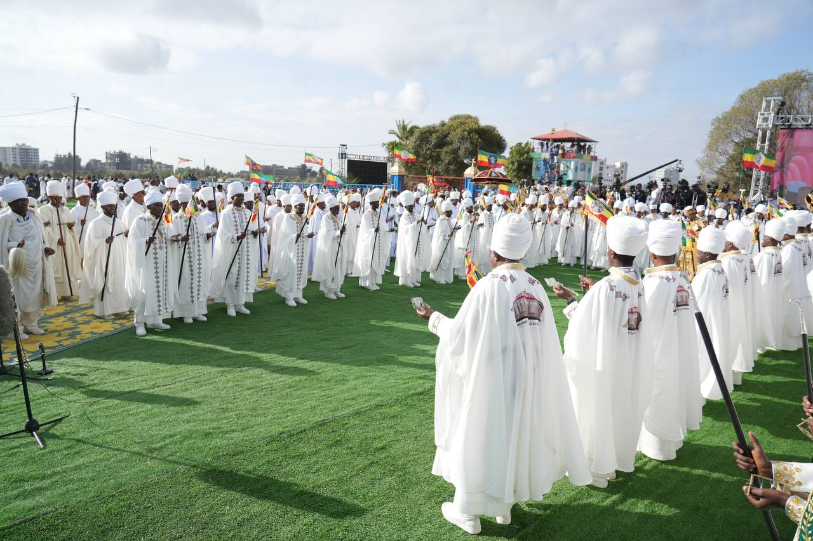
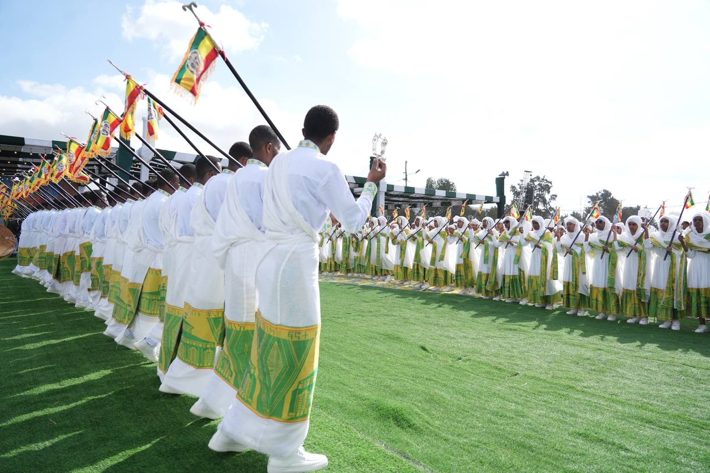
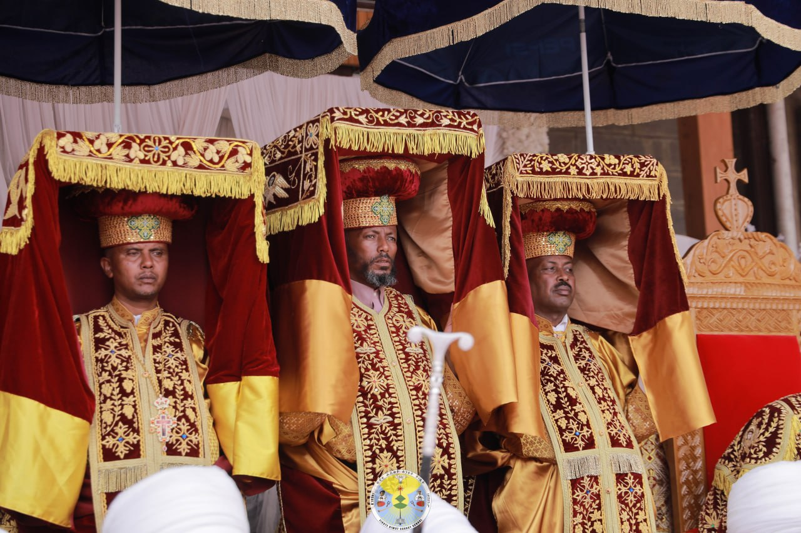

Kichene Medhanealem Church is a significant center of faith, worship, religious education, and Ethiopian Orthodox Tewahedo Christian heritage. The church is especially known for its spiritual celebrations and religious traditions honoring Medhanealem (the Savior of the World) and Saint Gabriel, whose commemorations bring together large numbers of faithful Christians in prayer, thanksgiving, devotion, and celebration. These holy occasions are meaningful expressions of faith, unity, love, and the deep spiritual connection between the church and its Christian community.
During these celebrations, believers come together to participate in divine liturgy, prayers, hymns, spiritual teachings, and other traditional religious activities. These celebrations help preserve the religious values and customs passed down through generations. The celebrations of Medhanealem and Saint Gabriel are important occasions that strengthen the faith and unity of the Christian community.
Beyond its religious celebrations, Kichene Medhanealem Church has an important place in the preservation and development of Ethiopian Orthodox religious scholarship. Its educational heritage reflects the long-standing importance of traditional church schools, where students pursue knowledge of Ge'ez, Qine, Zema, Bible studies, church history, and other areas of theological and spiritual learning.
These educational traditions contribute to the development of dedicated scholars, teachers, spiritual leaders, and church servants who help preserve and transmit the teachings of the Ethiopian Orthodox Tewahedo Church.
The Christian community of Kichene Medhanealem Church plays an essential role in keeping its spiritual and cultural heritage alive. Through active participation in worship, Sunday School programs, religious festivals, community services, and educational activities, Christians strengthen their relationship with God and one another.
The church serves as a place where children, young people, adults, and elders come together to learn, share experiences, support one another, and develop a strong sense of belonging. Its Sunday School provides opportunities for younger generations to learn Christian teachings, biblical values, church traditions, love, humility, respect, and compassion.
Kichene Medhanealem Church represents more than a place of worship. It is a home of spiritual growth, a center of religious education, a guardian of Ethiopian Orthodox traditions, and a community united by faith.
Through its celebrations of Medhanealem and Saint Gabriel, its commitment to religious scholarship, and the dedication of its Christian community, the church continues to inspire generations to preserve their faith, pursue knowledge, and contribute positively to society.


